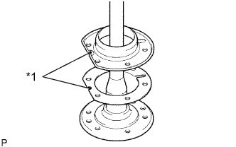
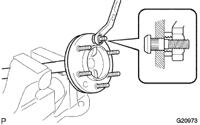
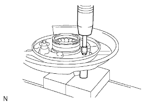
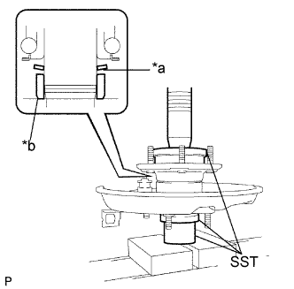
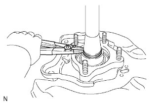

ВАЛ ЗАДНЕЙ ПОЛУОСИ > ПОВТОРНАЯ СБОРКА |
| 1. УСТАНОВИТЕ МАСЛООТРАЖАТЕЛЬ ТОРМОЗНОГО БАРАБАНА (лев.) |
|  |
Установите новую прокладку отражателя и отражатель на вал задней полуоси.
| *1 | Отверстия для слива масла |
Вставьте 6 новых болтов крепления колеса к ступице.
|  |
Предварительно установите шайбу и гайку на каждый болт крепления колеса к ступице, как показано на рисунке.
Зафиксируйте болты крепления колеса к ступице, затянув каждую гайку.
Снимите шайбу и гайку с каждого болта крепления колеса к ступице.
| 2. УСТАНОВИТЕ СТУПИЦУ И ПОДШИПНИК ЗАДНЕГО ЛЕВОГО КОЛЕСА В СБОРЕ |
Установите новую ступицу заднего колеса и подшипник на опорный диск стояночного тормоза.
|  |
Используя 2 торцевых ключа со сменными головками и пресс, вставьте 4 болта кожуха.
| 3. УСТАНОВИТЕ ВАЛ ЛЕВОЙ ЗАДНЕЙ ПОЛУОСИ |
|  |
Установите новую шайбу и новый держатель на ступицу колеса, как показано на рисунке.
| *a | Коническая поверхность |
| *b | Скошенная поверхность |
С помощью SST и пресса вдавите вал задней полуоси.
| 4. УСТАНОВИТЕ ПРУЖИННОЕ СТОПОРНОЕ КОЛЬЦО ВАЛА ЛЕВОЙ ЗАДНЕЙ ПОЛУОСИ |
|  |
С помощью съемника стопорных колец установите новое пружинное стопорное кольцо вала задней полуоси.